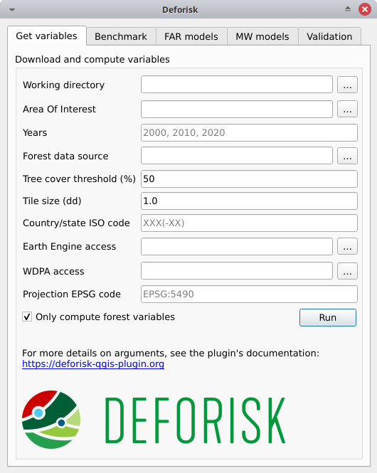

Plugin API#
Interfaz del complemento#
La interfaz del complemento muestra cinco pestañas: Get variables, Benchmark, FAR models, MW models y Validation. Cada pestaña incluye uno o varios cuadros. Por ejemplo, la pestaña FAR models incluye tres cuadros: Sample observations, Fit models to data, y Predict the deforestation risk. Los argumentos de cada pestaña o cuadro se detallan a continuación. Suelen corresponder a parámetros de función de los paquetes de Python utilizados por el complemento deforisk.
Get variables#
Download and compute variables#
Esta caja es para recopilar la información necesaria para descargar los datos y calcular las variables que se utilizarán para modelar espacialmente el riesgo de deforestación para un área de interés determinada.
Working directory: Directorio de trabajo. Ruta al directorio de trabajo donde se almacenarán todos los datos y salidas del modelo.Area Of Interest: Área de interés. Código alfa-3 de país ISO 3166-1 (por ejemplo, MTQ) o ruta al archivo vectorial GPKG en lat/lon delimitando el área de interés (jurisdicción) y las sub-jurisdicciones. El archivo vectorial GPKG debe incluir dos capas, la primera debe llamarse «aoi» para la jurisdicción y la segunda debe llamarse «subj» para las sub-jurisdicciones. Este archivo vectorial GPKG se puede obtener manualmente utilizando herramientas de QGIS y datos del sitio web de Áreas Administrativas Globales (GADM). Se proporciona un ejemplo en el siguiente artículo sobre el uso de jurisdicciones subnacionales.Years: Años. Años que delimitan los dos períodos (períodos de calibración y validación) para las observaciones de cambio de cobertura forestal. Se deben proporcionar tres años. Los años pueden estar en el intervalo 2001–2024 para GFC (GFC no proporciona pérdida de cobertura arbórea para el año 2000) y 2000–2023 para TMF. Los años deben corresponder a los datos de cambio de cobertura forestal si se proporciona un archivo raster enForest data source.Forest data source: Fuente de los datos forestales. Puede ser «tmf», «gfc» o una ruta a un archivo raster válido de cambio de cobertura forestal multibanda (véase datos del usario).Tree cover threshold (%). Limite de cobertura arbórea. Porcentaje de cobertura arbórea utilizado para definir el bosque al utilizar GFC.Tile size (dd): Tamaño del mosaico (en grados decimales) usado para descargar el cambio de cobertura forestal. Se recomienda un valor de 1 grado.Country/state ISO code: Código ISO del país o estado utilizado para descargar datos de GADM, OSM, SRTM y WDPA. El código iso debe corresponder al país al que pertenece el área de interés proporcionada en «Área de Interés». Para los estados brasileños, utilice el código del estado en la forma «BRA-XX» (por ejemplo, «BRA-AM» para el estado de Amazonas). Una lista de códigos que se pueden utilizar con el complemento «deforisk» se puede encontrar en este archivo .tsv (ver columna iso3).Earth Engine access. Acceso a Earth Engine. Nombre de un proyecto de Google Cloud registrado para usar Earth Engine (y para el cual estás identificado como usuario) o una ruta a un archivo de clave privada JSON que te autoriza a acceder a Earth Engine a través de una cuenta de servicio. Si se proporciona un archivo raster enForest data source, no se descargará ningún dato de GEE y este argumento puede dejarse vacío.WDPA access: Acceso a WDPA. Token de API personal (una serie de letras y números comoca4703ffba6b9a26b2db73f78e56e088) o una ruta a un archivo de texto que especifique el valor de la variable ambiental «WDPA_KEY» (por ejemplo, un archivo de texto simple que incluya en una líneaWDPA_KEY="3e404871700e77c453c4e189d848f739"). Si se marcaOnly compute forest variables, no se descargará ningún dato de la WDPA y este argumento puede dejarse vacío.Projection EPSG code. Código EPSG de proyección. Código EPSG del sistema de referencia de coordenadas utilizado para proyectar mapas.Only compute forest variables: Si está marcado (por defecto), sólo se calculan las variables forestales. Por variables forestales nos referimos a los rásters de cambio de cobertura forestal con las categorías 1, 2, 3 (1: deforestación durante el primer periodo, 2: deforestación durante el segundo periodo, y 3: bosque remanente al final de los dos periodos) y los rásters de distancia al borde del bosque en las diferentes fechas. No se descargarán de Internet ni se calcularán otras variables explicativas (es decir variables derivadas de SRTM, WDPA o OSM). Utilice esto (i) para las pruebas para evaluar un modelo con sólo la distancia al borde del bosque como una variable explicativa, o (ii) si desea utilizar sus propios datos y no los datos disponibles en los conjuntos de datos globales.
Advertencia
Para los usuarios de Windows, elija un directorio de trabajo con una ruta corta (por ejemplo, C:\Users\<username>\<dirname>). Las rutas largas pueden causar problemas para acceder a los archivos en Windows.
Presionar el botón Run en esta caja descargará los datos y calculará las variables en segundo plano. Cuando la operación haya finalizado, aparecerá un mapa de cambio de cobertura forestal en la lista de capas de QGIS y se creará un gráfico del cambio de cobertura forestal fcc123.png en la carpeta outputs/variables. Se crean nuevas carpetas en el directorio de trabajo:
Se crean seis carpetas de datos:
data_raw: datos en bruto con archivos intermedios.data: datos procesados utilizados para modelos y gráficos.
Las siguientes cuatro carpetas solo incluyen symlinks para evitar duplicar datos:
data_calibration: datos utilizados para la calibración del modelo en el período de calibración (t1–t2).data_validation: datos utilizados para predecir el riesgo de deforestación en t2 y validar modelos en el período de validación (t2–t3). Esta carpeta utilizada para la predicción no incluye un archivofcc.tifsino solo archivos ráster de variables explicativas.data_historical: datos utilizados para la calibración del modelo en el período histórico (t1–t3).data_forecast: datos utilizados para predecir el riesgo de deforestación en t3 y pronosticar la deforestación más allá de t3. Esta carpeta tampoco incluye ningún archivofcc.tif.
Se crean tres carpetas más:
outputs: Resultados (figuras y tablas).outputs/variables: Salida para variables.qgis_layer_style: Estilos de capa para QGIS.
Benchmark#

Fit model to data#
Esta pestaña es para recopilar la información necesaria para mapear el riesgo de deforestación utilizando el modelo de referencia de Verra JNR Unplanned Deforestation Allocation (UDef-A) tool. En resumen, el modelo de referencia asume que la deforestación es insignificante más allá de una cierta distancia al borde del bosque, que el riesgo de deforestación disminuye con la distancia al borde del bosque y que para una distancia dada al borde del bosque el riesgo varía entre subjurisdicciones.
Deforestation threshold (%): Limite de deforestación acumulado utilizado para identificar la distancia limite al borde del bosque. Por defecto, 99.5% como se sugiere en la metodología UDef-A.Max. distance to forest edge (m): Distancia máxima al borde del bosque utilizada para calcular la deforestación acumulada en función de la distancia al borde del bosque. El valor predeterminado es 2500 m, ya que la mayor parte de la deforestación debería ocurrir por debajo de esta distancia. Aumente este número si no se alcanza el valor del 99.5% para la deforestación acumulada.calib. period: Si está marcado, el modelo se ajusta durante el período de calibración (t1–t2).hist. period: Si está marcado, el modelo se ajusta durante el período histórico (t1–t3).
Pulsar el botón Run en este cuadro estimará la distancia al borde del bosque más allá de la cual se asume que el riesgo de deforestación es insignificante. Este umbral de distancia se utiliza para definir una primera clase de riesgo de deforestación. Luego, se estiman 29 clases de riesgo de deforestación a partir de la distancia al borde del bosque utilizando una serie geométrica para identificar los intervalos. Las clases con mayores riesgos de deforestación tienen rangos más estrechos de distancia al borde del bosque. Finalmente, se estima una tasa de deforestación para cada una de las 30 clases dentro de cada subjurisdicción basada en la deforestación observada para el período de tiempo considerado.
Se crean las siguientes carpetas: outputs/rmj_benchmark/calibration y outputs/rmj_benchmark/historical. Se añaden los siguientes archivos a estas carpetas:
tab_dist.csv: Tabla con la deforestación acumulada en función de la distancia al borde del bosque.perc_dist.png: Gráfico de la deforestación acumulada en función de la distancia al borde del bosque que muestra el umbral de distancia.dist_edge_threshold.csv: Tabla con umbral de distancia y deforestación acumulada correspondiente (que debe ser \(\geq\) 99.5%).dist_bins.csv: Tabla con los intervalos utilizados para convertir la distancia al límite del bosque en 29 clases de riesgo de deforestación utilizando una serie geométrica.subj.tif: Raster de subjurisdicciones con valores que van de 1 a potencialmente 999.prob_bm_t1.tif: Raster con clases de riesgo de deforestación que van desde 1001 hasta potencialmente 30999.prob_bm_t1.png: Gráfica del mapa de riesgo de deforestación.defrate_cat_bm_<period>.csv: Tabla con tasas de deforestación en el período para cada clase de riesgo de deforestación (ver detalles abajo).
Tabla defrate_cat_<model>_<period>.csv#
La tabla defrate_cat_<model>_<period>.csv incluye las siguientes columnas:
cat: La clase (o categoría) de riesgo de deforestación (denotada \(i_{}\)).nfor: El número de píxeles forestales al inicio del período (denotado \(n_{i}\)).ndefor: El número de píxeles deforestados durante el período considerado (denotado \(d_{i}\)).time_interval: Intervalo de tiempo para el período (denotado \(T\), en años). Por ejemplo, 10 años para el período 2000–2010.pixel_area: Área de píxel (denotada \(A\), en ha). Por ejemplo, 0.9 ha para píxeles de 30 × 30 m.rate_obs: Tasa anual de deforestación observada por clase calculada como \(\theta_{o,i} = 1 - (1 - d_{i} / n_{i})^{(1 / T)}\).rate_mod: Probabilidad relativa de deforestación espacial del modelo. Para el modelo de referencia, se calcula como \(\theta_{m,i}=d_{i}/n_{i}\).rate_abs: Probabilidad absoluta de deforestación con ajuste de cantidad (de modo que la deforestación total predicha sea igual a la deforestación observada en el período), calculada a partir de un factor de ajuste \(\rho\) como \(\theta_{a,i} = \rho \theta_{m,i}\) con \(\rho = \sum_{i} d_{i} / \sum_i n_{i} \theta_{m,i}\). Para el modelo de referencia para los períodos de calibración e históricos, \(\rho=1\) y \(\theta_{a,i}=\theta_{m,i}\).defor_dens: Densidad de deforestación (en ha/píxel/año) calculada como \(\delta_{i} = \theta_{a,i} \times A / T\). La densidad de deforestación se utiliza para predecir la cantidad de deforestación de cada píxel perteneciente a una clase determinada de riesgo de deforestación.
Predict the deforestation risk#
Este paso es para predecir el riesgo de deforestación y derivar mapas de riesgo utilizando los modelos de referencia ajustados en el período de calibración o histórico.
t2 validation: Si está marcado, calcula predicciones en t2 para validación (utilizando el modelo de referencia ajustado durante el período de calibración).pronóstico t3: Si está marcado, calcula predicciones en t3 para el pronóstico (utilizando el modelo de referencia ajustado durante el período histórico).
Pulsar el botón Run en este cuadro utilizará los modelos de referencia para las predicciones. Tenga en cuenta que no puede hacer predicciones si no ha ajustado los modelos (ver paso anterior). Cuando la operación haya finalizado, los rásteres que representan las clases de riesgo de deforestación aparecerán en la lista de capas de QGIS. Puede navegar por los diferentes mapas para ver cómo cambia el riesgo de deforestación en el espacio para las diferentes fechas. Por ejemplo, puede observar el efecto de la distancia al borde del bosque.
Se crean las siguientes carpetas: outputs/rmj_benchmark/validation y outputs/rmj_benchmark/forecast. Se añaden los siguientes archivos a estas carpetas:
prob_bm_<date>.tif: Raster con clases de riesgo de deforestación que van de 1001 a potencialmente 30999 (alto riesgo de deforestación).prob_bm_<date>.png: Trazado del mapa de riesgo de deforestación.defrate_cat_bm_<period>.csv: Tabla con tasas de deforestación en el período para cada clase de riesgo de deforestación. Ver detalles arriba con una excepción: la columnarate_modindica las tasas de deforestación obtenidas durante el período de calibración (cuando se predice en t2) o histórico (cuando se predice en t3).
FAR models#

Sample observations#
Este cuadro es para recopilar la información necesaria para muestrear las observaciones de deforestación. Este es un paso necesario ya que no podemos ajustar un modelo utilizando todos los píxeles del bosque, que normalmente son demasiados. No obstante, las observaciones muestreadas deben ser representativas del proceso de deforestación en el área de estudio.
N# samples: Número de observaciones a muestrear. Se trata de un muestreo estratificado (N# muestras en cada clase, deforestado/no deforestado).Adapt sampling: Si está marcado, el número de observaciones es proporcional al área de bosque.Random seed: Semilla aleatoria utilizada para hacer reproducible la muestra aleatoria.Spatial cell size (km): Tamaño de las celdas espaciales utilizadas para estimar efectos aleatorios espaciales. Estos efectos aleatorios espaciales explican la variabilidad regional residual en el riesgo de deforestación que no es tomada en cuenta por las variables explicativas espaciales (por ejemplo, distancia al borde del bosque) incluidas en el modelo. Debido a que se estima un parámetro para cada celda, use un valor para tener (aproximadamente) entre 500 y 1000 celdas espaciales que cubran su área de interés.calib. period: Si está marcado, las observaciones se muestrean para el período de calibración (t1–t2).hist. period: Si está marcado, las observaciones se muestrean para el período histórico (t1–t3).
Al presionar el botón Run en este cuadro se muestrearán las observaciones. Tenga en cuenta que no puede muestrear las observaciones antes de descargar y calcular las variables (consulte el paso anterior). Cuando finaliza la operación, las observaciones muestreadas aparecen en la lista de capas de QGIS. Puede navegar por el mapa para confirmar que aproximadamente la mitad de las observaciones se han muestreado en el área deforestada y la otra mitad en el área no deforestada.
La carpeta outputs/far_models se crea con las subcarpetas calibration e historical si calib. period y hist. period han sido verificados respectivamente. Los archivos sample.txt, sample_size.csv, csize_icar.txt y correlation.pdf se agregan a las carpetas de salida para cada período.
Fit models to data#
Esta pestaña es para recopilar la información necesaria para modelar espacialmente la deforestación utilizando tres modelos estadísticos disponibles en el paquete Python forestatrisk (FAR): modelos iCAR, GLM y Random Forest.
List of variables: Lista de variables explicativas utilizadas para la modelización estadística. Los nombres de las variables deben corresponder a los nombres de los archivos (sin extensión «.tif») de la carpetadata_calibrationodata_historical. Los nombres de las variables deben ir separados por una coma. Para variables categóricas (como áreas protegidas) utilice el nombre de la variable con la notaciónC(), comoC(pa). Si está vacía, se utilizará la fórmula por defecto:C(pa), altitude, slope, dist_edge, dist_road, dist_river, dist_town.Starting values for betas: Si -99 (recomendado), los valores iniciales para betas corresponden a estimaciones de un GLM simple con las mismas variables.Prior Vrho: Si -1 (recomendado), el anterior para Vrho es una Gamma inversa.MCMC: Longitud del MCMC para el modelo final.Variable selection: Si está marcado (recomendado), se realiza una selección de variables (selección hacia atrás) antes de ajustar el modelo final.calib. period: Si está marcado, los modelos se instalan durante el período de calibración (t1–t2).hist. period: Si está marcado, los modelos se instalan durante el período histórico (t1–t3).
Al presionar el botón Run en este cuadro se ajustará el modelo estadístico a las observaciones de deforestación. Tenga en cuenta que no puede ajustar el modelo si no ha muestreado las observaciones (consulte el paso anterior).
Los siguientes archivos se añaden a las carpetas outputs/far_models/calibration y outputs/far_models/historical:
summary_icar.txt: Resumen del modelo iCAR con media, desviación estándar e intervalos creíbles para los parámetros del modelo.mcmc.pdf: Traza y distribución posterior de los parámetros del modelo icar. Se utiliza para comprobar la convergencia MCMC.mod_icar.pickle: Un archivo comprimido con las características del modelo iCAR. Utilizado para proyecciones.mod_null.pickle: un archivo comprimido con características de modelo nulas. Sólo se utiliza como archivo.mod_glm.pickle: Un archivo comprimido con características del modelo GLM. Utilizado para proyecciones.mod_rf.joblib: Un archivo comprimido con características del modelo Random Forest. Utilizado para proyecciones.model_deviances.csv. Un archivo de texto que compara el porcentaje de desviación explicado entre modelos. Este porcentaje es una indicación de la bondad de ajuste del modelo.
Predict the deforestation risk#
Este paso es para predecir el riesgo de deforestación y derivar mapas de riesgo utilizando los modelos FAR ajustados al período histórico o de calibración.
iCAR model: Si está marcado, calcula predicciones con el modelo iCAR.GLM: Si está marcado, calcula predicciones con GLM.RF model: Si está marcado, calcula predicciones con el modelo de bosque aleatorio.t1 calibration: Si está marcado, calcula predicciones en t1 utilizando modelos ajustados durante el período de calibración.t2 validation: Si está marcado, calcula predicciones en t2 para su validación (utilizando modelos ajustados durante el período de calibración).t1 historical: Si está marcado, calcula predicciones en t1 utilizando modelos ajustados durante el período histórico.t3 forecast: Si está marcado, calcula predicciones en t3 para realizar pronósticos (utilizando modelos ajustados durante el período histórico).
Al presionar el botón Run en este cuadro se utilizarán los modelos estadísticos para las predicciones. Tenga en cuenta que no puede hacer predicciones si no ha ajustado los modelos (consulte el paso anterior). Cuando finaliza la operación, los rásteres que representan las clases de riesgo de deforestación aparecen en la lista de capas de QGIS. Puedes navegar por los diferentes mapas para ver cómo va cambiando el riesgo de deforestación en el espacio para las distintas fechas. Por ejemplo, puede observar el efecto de la distancia al borde del bosque, de la distancia a las carreteras o de las áreas protegidas.
Se crean las siguientes carpetas para cada período: outputs/far_models/<period>. Para cada modelo, fecha o período se crean los siguientes archivos:
prob_<far_model>_<date>.tif: Ráster con clases de riesgo de deforestación que van del 1 al 65535 (mayor riesgo de deforestación).prob_<far_model>_<date>.png: Trazado del mapa de riesgo de deforestación.defrate_cat_<model>_<period>.csv: Tabla con tasas de deforestación en el período para cada clase de riesgo de deforestación. Ver detalles arriba con una excepción para los modelos FAR: la columnarate_modse calcula como \(\theta_{m,i} = ((i - 1) \times 999999 / 65534 + 1) \times 1e^{- 6}\). Esta fórmula conduce a una probabilidad de deforestación casi nula (\(1e^{-6}\)) cuando \(i=1\) y a una probabilidad de deforestación de 1 cuando \(i=65535\).
MW models#

Fit model to data#
Esta pestaña sirve para recopilar la información necesaria para mapear el riesgo de deforestación utilizando el modelo de ventana móvil propuesto por primera vez por Verra en el JNR Risk Mapping Tool v0.1. En resumen, el modelo móvil supone que la deforestación es insignificante más allá de una distancia determinada hasta el borde del bosque (como en el modelo de referencia), y que el riesgo de deforestación puede estimarse en el área restante con un enfoque de ventana móvil.
Deforestation threshold (%): Limite de deforestación acumulada utilizado para identificar la distancia limite al borde del bosque. Por defecto es 99,5%.Max. distance to forest edge (m): Distancia máxima al borde del bosque utilizada para calcular la deforestación acumulada en función de la distancia al borde del bosque. Predeterminado a 2500 m ya que la mayor parte de la deforestación debería ocurrir por debajo de esta distancia. Aumentar este número si no se alcanza el umbral de deforestación acumulada.Window sizes (# pixels): Tamaños de ventana en número de píxeles. Se pueden especificar varios tamaños de ventana si se separan con una coma, como «11, 21» por ejemplo, que son los valores predeterminados.calib. period: Si está marcado, el modelo se ajusta durante el período de calibración (t1–t2).hist. period: Si está marcado, el modelo se ajusta durante el período histórico (t1–t3).
Al presionar el botón Run en este cuadro se estimará la distancia hasta el borde del bosque más allá de la cual el riesgo de deforestación se supone insignificante. Este umbral de distancia se utiliza para definir una primera clase de riesgo de deforestación igual a 1. Luego se estiman las tasas de deforestación en el área restante con una ventana móvil. Las tasas de deforestación en el intervalo [0, 1] se reescalan en el intervalo [2, 65535].
Se crean las siguientes carpetas: outputs/rmj_moving_window/calibration y outputs/rmj_moving_window/historical. Los siguientes archivos se agregan a estas carpetas:
tab_dist.csv: Tabla con la deforestación acumulada en función de la distancia al borde del bosque.perc_dist.png: Gráfico de la deforestación acumulada en función de la distancia al borde del bosque que muestra el umbral de distancia.dist_edge_threshold.csv: Tabla con umbral de distancia y deforestación acumulada correspondiente (que debe ser mayor o igual al umbral de deforestación definido).ldefrate_mw_<window_size>.tif: Ráster con tasas de deforestación locales reescaladas en [2, 65535].
Predict the deforestation risk#
Este paso es para predecir el riesgo de deforestación y derivar mapas de riesgo utilizando los modelos de ventana móvil ajustados al período histórico o de calibración.
t1 calibration: Si está marcado, calcula predicciones en t1 utilizando modelos ajustados durante el período de calibración.t2 validation: Si está marcado, calcula predicciones en t2 para su validación (utilizando modelos ajustados durante el período de calibración).t1 historical: Si está marcado, calcula predicciones en t1 utilizando modelos ajustados durante el período histórico.t3 forecast: Si está marcado, calcula predicciones en t3 para realizar pronósticos (utilizando modelos ajustados durante el período histórico).
Al presionar el botón Run en este cuadro se utilizarán los modelos de ventana móvil para las predicciones. Tenga en cuenta que no puede hacer predicciones si no ha ajustado los modelos (consulte el paso anterior). Cuando finaliza la operación, los rásteres que representan las clases de riesgo de deforestación aparecen en la lista de capas de QGIS. Puedes navegar por los diferentes mapas para ver cómo va cambiando el riesgo de deforestación en el espacio para las distintas fechas.
Se crean las siguientes carpetas para cada período: outputs/rmj_benchmark/<period>. Se crean los siguientes archivos para cada tamaño de ventana, fecha o período:
prob_mw_<window_size>_<date>.tif: Ráster con clases de riesgo de deforestación que van desde 1 (riesgo de deforestación nulo más allá del umbral de distancia) a 65535 (riesgo de deforestación más alto).prob_mw_<window_size>_<date>.png: Trazado del mapa de riesgo de deforestación.defrate_cat_mw_<window_size>_<period>.csv: Tabla con tasas de deforestación en el período para cada clase de riesgo de deforestación. Ver detalles arriba con una excepción para los modelos de ventana en movimiento: la columnarate_modse calcula como \(\theta_{m,1} = 0\) y \(\theta_{m,i} = ((i - 2) \times 999999/65533 + 1) \times 1e^{-6}\) para \(i > 1\). Esta fórmula conduce a una probabilidad de deforestación casi nula (\(1e^{-6}\)) cuando \(i=2\) y a una probabilidad de deforestación de 1 cuando \(i=65535\).
Validation#

Model validation#
Este paso se utiliza para validar modelos y mapas de deforestación y estimar su desempeño para predecir correctamente la ubicación de la deforestación. De forma predeterminada, siempre se estima el rendimiento del modelo de referencia.
Coarse grid cell size (# pixels): Tamaño de celda espacial en número de píxeles utilizado para comparar el área deforestada observada con el área deforestada prevista. El tamaño de la celda debe ser < 10 km. Por ejemplo, un valor de 300 corresponde a 9 km para un ráster de resolución de 30 m. Se pueden proporcionar varios valores si se separan por coma. El valor predeterminado es “50, 100”.iCAR model: Si está marcado, estima el rendimiento del modelo iCAR.GLM: Si está marcado, estima el rendimiento del GLM.RF model: Si está marcado, estima el rendimiento del modelo de bosque aleatorio.MW model: Si está marcado, estima el rendimiento de los modelos de ventana móvil.calib. period: Si está marcado, estima el rendimiento del modelo para el período de calibración (t1–t2).valid. period: Si está marcado, estima el rendimiento del modelo para el período de validación (t2–t3).hist. period: Si está marcado, estima el desempeño del modelo para el período histórico (t1–t3).
Pulsando el botón Ejecutar en este cuadro se calculará el área deforestada prevista en cada celda de la cuadrícula para cada modelo y cada período que se hayan seleccionado y se comparará este valor con el área deforestada observada para la misma celda de la cuadrícula y el mismo período. Tenga en cuenta que no puede validar los modelos si no los ha ajustado (véase el paso anterior).
Se crean las siguientes carpetas para cada período: outputs/model_validation/<period>/figures y outputs/model_validation/<period>/tables. Se agregan los siguientes archivos para cada modelo, período y tamaño de celda de la cuadrícula:
tables/pred_obs_<model>_<period>_<cell_size>.csv: Valores del área deforestada observada y prevista en cada celda de la cuadrícula.tables/índices_<model>_<period>_<cell_size>.csv: Valores de índices de rendimiento para un modelo, período y tamaño de celda de cuadrícula determinados. Los índices de rendimiento incluyen \(R^ {2}\), el error absoluto medio (MedAE, en ha), el error cuadrático medio (RMSE, en ha) y el error cuadrático medio ponderado (wRMSE, en ha). Para lo cual los pesos están determinados por el número de píxeles del bosque en cada celda de la cuadrícula gruesa.figures/pred_obs_<model>_<period>_<cell_size>.png: Gráfico del área deforestada prevista versus observada. El gráfico muestra los valores del área deforestada prevista y observada en cada celda de la cuadrícula como puntos y la línea uno-uno. El gráfico también informa el número de celdas (o puntos) de la cuadrícula y los valores de dos de los índices de rendimiento: \(R^ {2}\) y MedAE.
Asignación de la deforestación#
Este paso consiste en asignar la deforestación a un proyecto dentro de la jurisdicción.
Juris. risk map: Ruta al mapa de riesgo jurisdiccional en t3. Normalmente del mejor modelo de deforestación.Table. with defor. rates: Ruta a la tabla con las tasas de deforestación del modelo en t3 para cada clase de riesgo de deforestación.Project borders: Ruta al archivo vectorial que define los bordes del proyecto.Juris. deforestation (ha): Deforestación prevista a nivel jurisdiccional en hectáreas.Length forecast period (yr): Duración del período de previsión (también denominado «período de validez de la línea de base»), en años. Se utiliza para calcular la deforestación anual del proyecto.
Al pulsar el botón Run en este cuadro, se calcula el factor de ajuste de cantidad y la densidad de deforestación para cada clase de riesgo utilizando la deforestación total esperada a nivel jurisdiccional y las tasas de deforestación espacial relativas del modelo. A continuación, el mapa de riesgo con las clases de riesgo de deforestación se recorta hasta los límites del proyecto y se calcula el número de píxeles de bosque en cada clase de riesgo a nivel de proyecto. Por último, la deforestación esperada a nivel de proyecto se obtiene sumando las densidades de deforestación dentro del proyecto.
Se crea la siguiente carpeta: outputs/allocating_deforestation. Esta carpeta incluye los siguientes archivos:
project_riskmap.tif: Mapa de riesgos recortado a los bordes del proyecto.project_riskmap.tif.aux.xml: Datos de histograma con recuento de píxeles para cada clase de riesgo en [1, 65535].defrate_cat_forecast.csv: Tabla con la densidad de deforestación (en ha/pixel/año) para cada clase de riesgo de deforestación.defor_project.csv: Tabla con la deforestación anual y total asignada para el proyecto.